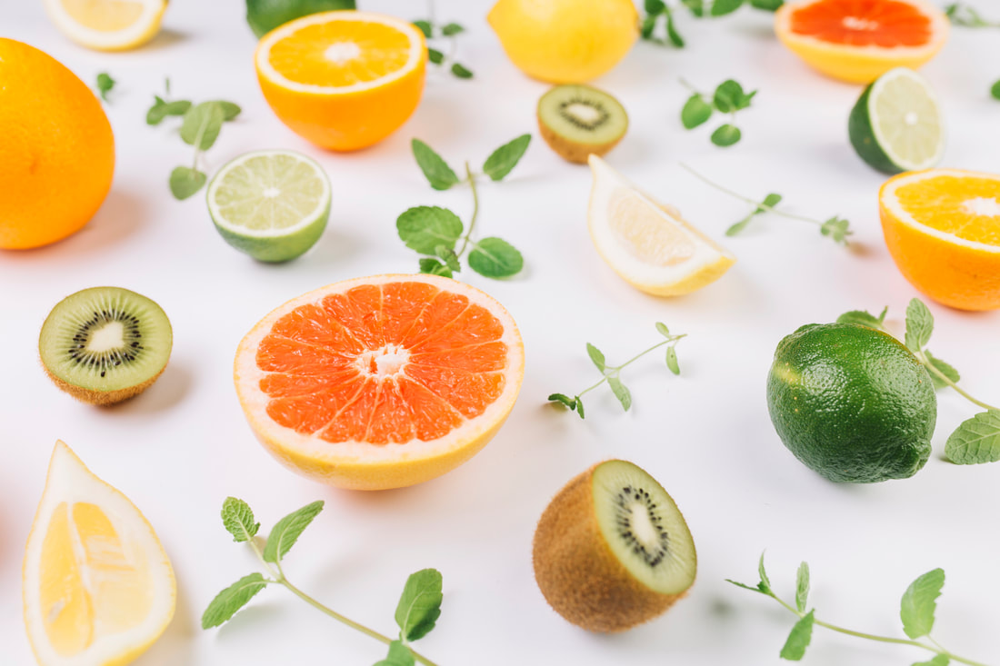
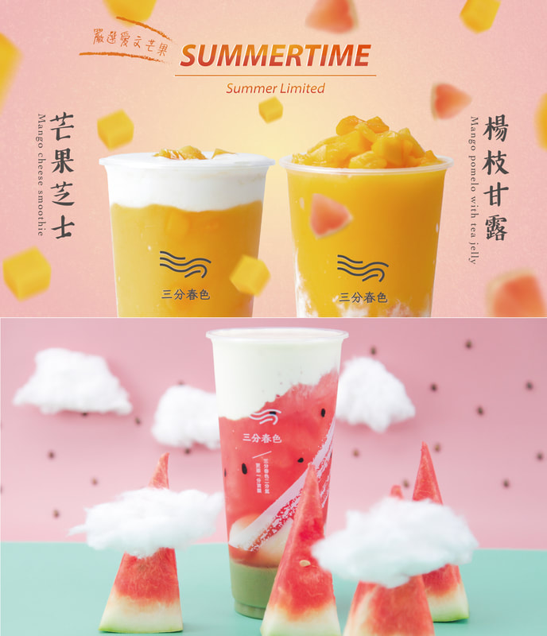

首頁
忘川風華錄 X 三分春色
四週年特選茶品_朝露焙茶
最新消息
更多...
關於三分
「嚴格控管水果最新鮮的狀態， 搭配精選香醇茶種，成為您手中飲品。」
這幾年來，三分春色在全台設立數十間門市，擄獲無數老饕客人，
而客人們們最愛三分春色的飲品，其原料產地是來自屏東、台南、嘉義等…全台灣的山區果園，也有我們與世界各地的頂級果農合作的當季水果。
三分春色採用產地當季盛產的水果，新鮮直送層層檢驗把關，
嚴格要求使用食材皆有驗證合格之審核紀錄，有效準確的提升品質穩定與安全性。
與「調果汁」或是把「水果放在冰箱熟成」的不同概念！
這也是三分春色能擄獲廣大老饕味蕾，不變的鐵律！

「只要產品做得用心，飲用過程感到有趣，就是三分春色的宗旨。」
20年餐飲經驗
三分春色人員，大多從事餐飲業已逾 20年，以多年的餐飲經驗建立茶飲SOP標準流程，讓門市營運主管事半功倍，更運用眾多資源來降低成本，提高獲利能力。
國際化營銷策略
三分春色常與業界翹楚互動交流，思維置於國際觀，以遠見與世界接軌較傳統茶飲不落于凡，營銷策略新穎靈活，貼近消費市場。
專業營運團隊
為強化茶飲品牌運營，不落於舊有僵化思維，特禮聘挖角業界精英，專業經理營運操作，廣納人才、培養人才讓營運專業最大化，以期創造最大利益。
強大茶飲研發團隊
餐飲業最重要的核心就是產品，若產品不好，再厲害的營銷都沒用！品牌持續建立強大的飲品研發團隊，不斷學習永遠走在潮流尖端，在創新及市場口感融合取得最佳平衡，深得消費者喜愛。
後勤中央控管
專業的後勤能力是品牌的生命力，三分春色將後勤採用中央倉儲控管，冷凍冷藏食材原料物流中央管理。大幅降地成本管理風險，調度配送全在掌握之中，增大營運利潤。

三分春色兩分氳，更添一分流韻。
三分春色一詞源自於宋朝大詩人蘇東坡“水龍吟”辭賦裡頭，有春意流氳，及對大地謙卑之意，象徵品牌以謙卑的心，感恩大地之母孕育茶葉，並用真誠的心及好水為消費者沖泡每一杯流韻如詩的好茶。
飲品喝三分幸福會滿分!
三分春色高檔奢華卻平價的飲料品牌，透過經驗豐富的研發團隊，以及真材實料的原物料。配製而成一杯杯豐富且風味尤佳的華麗飲品。每一口都讓你回味無窮，幸福滿點。
安心政策
好的茶飲品牌的背後，肯定定少不了好的原物料，三分春色除了使用優質的茶，品質優良的牛奶以及新鮮水果之外，我們也提供原物料的SGS檢驗，讓消費者看的到喝的也放心。堅持給客人最好的東西就是我們的根本，也是我們強大的不二法則。
了解三分春色的食材
了解三分春色的食材